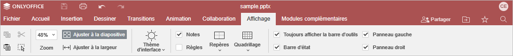

Utiliser des macros
Pour rendre votre travail encore plus efficace, utilisez des macros pour automatiser des tâches répétitives et modifier rapidement un fichier.
Étudiez notre documentation API pour apprendre en plus sur des macros et sur la génération des macros.
Enregistrement des macros
En dehors de génération des macros, il est possible de les enregistrer en mobilité.
- Passez à l'onglet Affichage.

- Cliquez sur le bouton Enregistrer une macro.
- Effectuer la tâche que vous souhaitiez transformer en macro. Les opérations enregistrées sont des opérations mentionnées sur Docs API, par exemple:
- mettre en forme du texte;
- Insérer des images, des formes et des équations;
- modifier et configurer les paramètres des formes.
- Sous l'onglet Affichage, cliquez sur Mettre en forme l'enregistrement pour arrêter temporairement l'enregistrement, le cas échéant.
- Cliquez sur le bouton Arrêter l'enregistrement pour terminer l'enregistrement. La macro qui en résulte est enregistré automatiquement.
Lors de l'enregistrement, la macro est créée en JavaScript sur la base de Docs API.
- Pour accéder et modifier les macros, cliquez sur le bouton Macros sous l'onglet Affichage. Modifiez la macro selon vos besoins.
Veuillez noter que les macros enregistrées ne sont pas des fichiers autonomes et il est possible de les accéder uniquement à partir du document dans lequel on l'a créé.